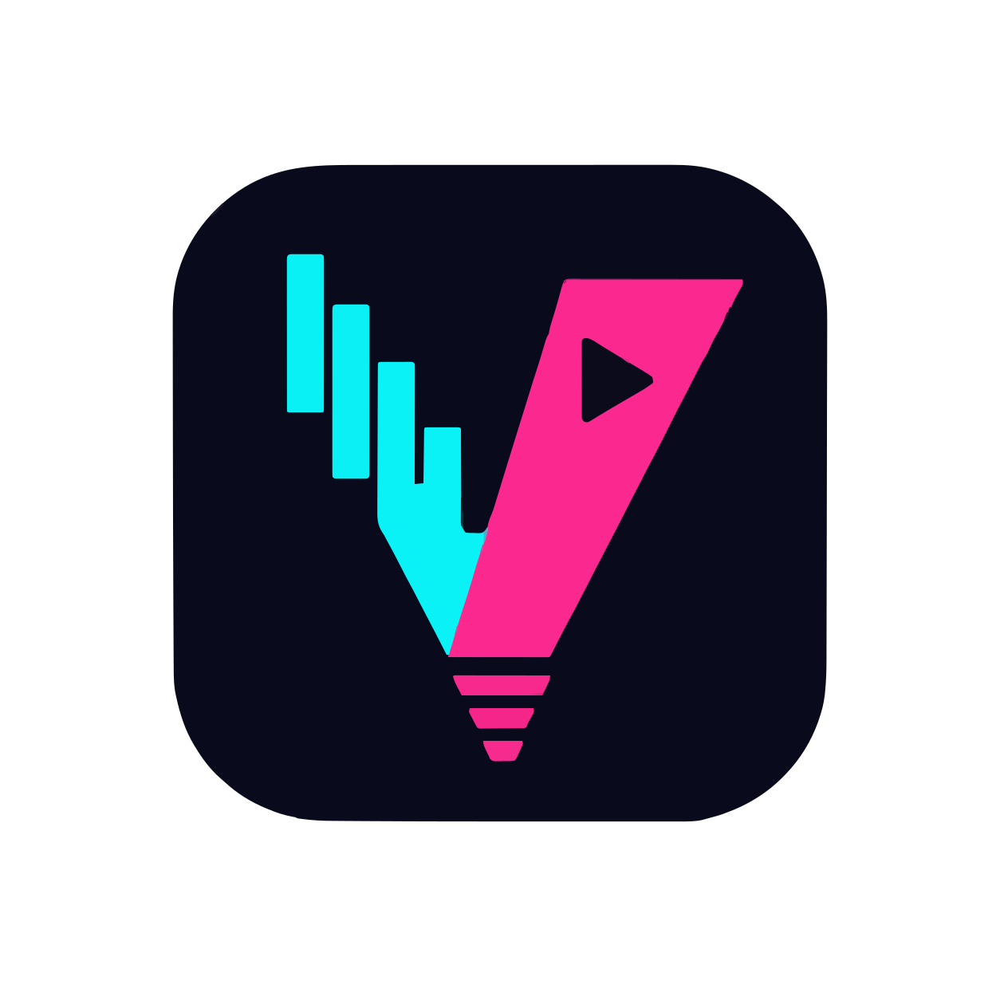

楽曲の読み込み
WAV、SUNO-Lyrics、スタイル、参照資料が出発点となります。

VOCA VIDローカルAIミュージックビデオワークフロー
VocaVidは、楽曲、歌詞、ComfyUIを統合し、単に実行するだけでなく、ユーザーが制御できるビジュアルワークフローを実現します。
ローカル。再開可能。オープンソース。
ブラックボックスなし
VocaVidは歌詞を検証可能な瞬間へと分解します。あなたは一貫したストーリーラインを構築し、各シーンを精査し、質の低いクリップを再生成しながら、優れた成果を維持します。
WAV、SUNO-Lyrics、スタイル、参照資料が出発点となります。
歌詞を時間軸に沿って配置し、ビジュアルプランを作成する。
ComfyUIで、プロンプト、画像、クリップをセグメントごとに作成します。
クリップを確認、保護、編集し、動画またはリールとして出力します。
ケーススタディ 01
ディストピアシリーズの幕開け：冷たく無機質なシステム、信号の乱れ、逸脱寸前の世界。完成した映像は、VocaVidのワークフローを用いてシーンごとに制作されました。
ショーケースへ →システムエラー 01 · 最終エクスポート
反復作業のために構築
個々のクリップが1本の映像作品になる前に、タイミング、シーン、メディアの全体像を把握しましょう。
クリップが合わない？その部分だけを再作成できます――残りの部分はそのまま維持されます。
プロジェクトの状態、メディア、レンダリングジョブは、お使いのシステムとGPU上に保持されます。
最終的な動画を編集し、リール候補となる縦型動画を見つけ、バリエーションをエクスポートします。

WINDOWS インストーラー
Windows で始めるならここから。ローカルにインストールし、極をステップごとに動画にします。
準備ができたらいつでも
VocaVidが役に立ったなら、今後の開発を支援していただけると幸いです。